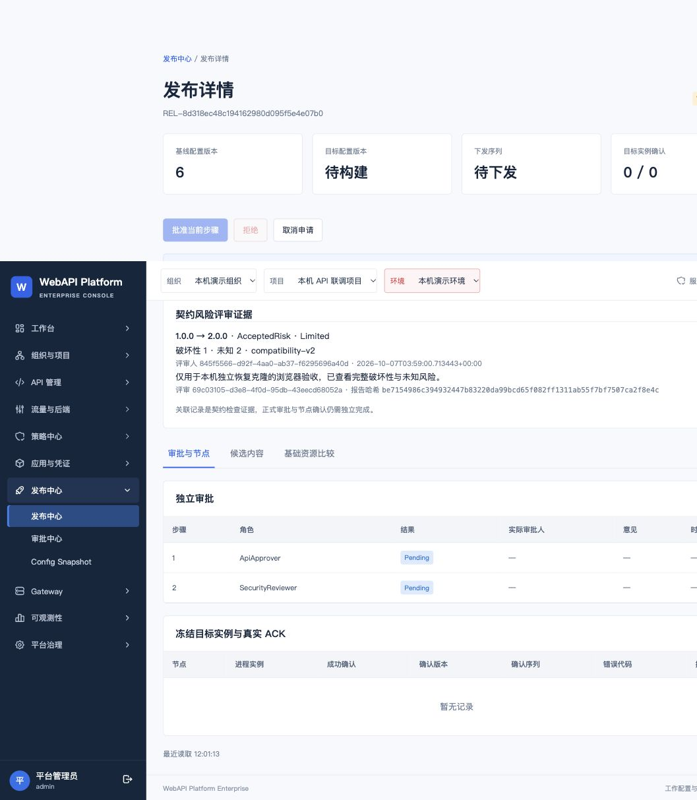

WebAPI Platform Enterprise · 第一批契约管理补全：安装前验收
隔离克隆及真实双宽度 UI 验收完成。等待独立审查、合并和 4192 软件升级；后两批尚未实施。
源码 b45c471 · Domain 610 · Integration 506 · Gateway 52 · Console 154 · Runtime/Contracts 114，零跳过。30 条规则关联 188 个实际测试标识。
未知 Schema 关键字保存限制尚需独立审查；详细结果没有将 Incomplete 算作验证成功。Vite 大 chunk 提示仍存在。以下为克隆中通过现有向导提交的两级审批申请。
